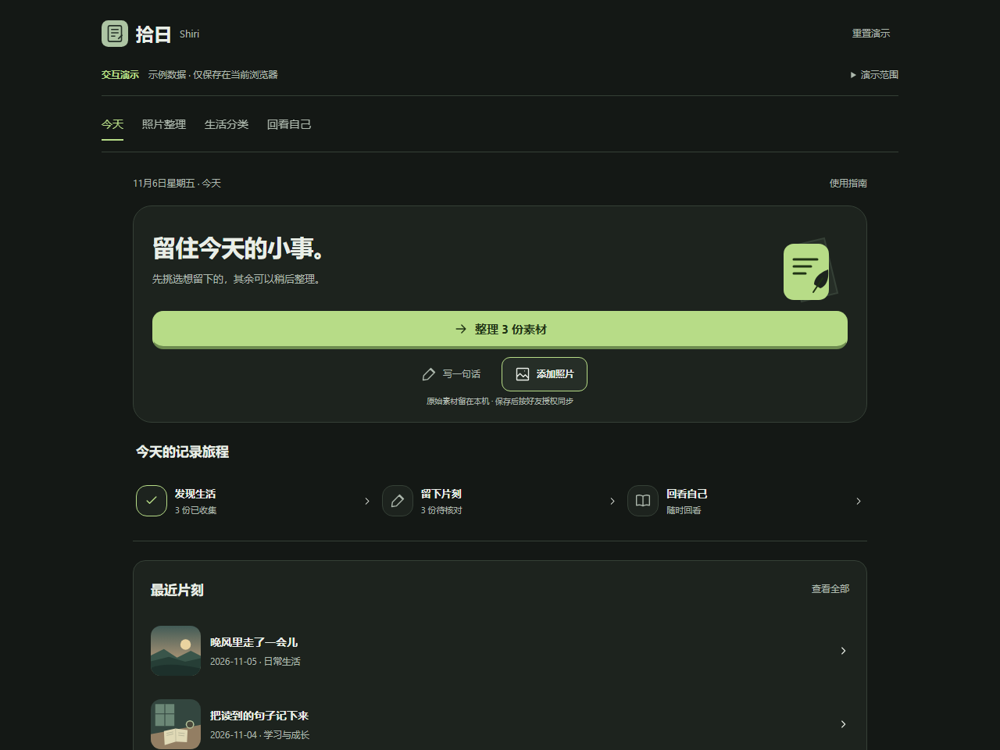

记录生活
照片之外，
留一句当时的感受。
选出想留下的照片，补上文字与分类。为自己保存一个片刻，不需要精心经营。
照片 · 文字 · 生活片刻
一顿饭，一段路，一个突然冒出的念头。
拾日把这些小事，慢慢连成你的生活。
照片之外，
留一句当时的感受。
选出想留下的照片，补上文字与分类。为自己保存一个片刻，不需要精心经营。
照片 · 文字 · 生活片刻回头看看，
时间留给了什么。
从日报到周报，把真实记录放在一起，看看最近的生活，再决定下一步怎样安排。
生活复盘 · 记录统计 · 可编辑规划各自忙碌，
也知道彼此的近况。
把查看权限留给真正亲近的人。他们可以按你的授权，看看你最近保存的生活片刻。
主动授权 · 独立范围 · 随时调整轻一点记录，多一点回望
保存一次，就进入自己的生活记录。
符合好友授权范围时，联网后自动同步。
选择照片，或写下一件小事。
核对日期与内容，留下想记住的部分。
云端副本仅向获得相应权限的好友开放。
在自己的节奏里，整理感受和下一步。
未审核素材不自动上传。特别私密的片刻，可以选择「仅自己可见」。
已审核、已保存且允许好友查看的片刻，会同步文字、日期、分类等记录信息和压缩照片副本至腾讯云 CloudBase。仅自己可见的片刻、私人日记、未审核素材和复盘报告不自动分享。
双方分别设置可见范围与历史范围。未登录、陌生人及未获对应授权的用户，不能通过服务端读取这些私人内容。
撤销授权、删除好友或屏蔽后，服务端拒绝后续访问。删除已同步片刻也会撤回云端访问；离线操作需联网完成后生效。对方已经保存或截图的内容，无法远程收回。
以上是当前功能的数据流说明，不能代替正式隐私政策。正式政策尚未提供；内测前如需确认数据处理方式，请联系开发者。正式对外运营前需补齐政策、运营主体及联系信息。
联系开发者 →下载之后
已有旧版？先在 APP 设置中导出完整备份，
再覆盖安装。不要卸载或清除旧数据。
点击下载入口，在蒲公英页面核对应用为「拾日」及实际版本。等待 APK 下载完成后，打开下载文件，再核对应用名称与来源。
根据手机系统提示确认是否继续。若出现风险提示、签名异常或无法确认文件来源，请停止安装，联系开发者核实。不要为了安装而关闭安全检测。
当前支持邮箱验证码注册与登录。验证后进入自己的生活空间；不需要把验证码提供给开发者或任何其他人。
添加照片，在本机核对内容并保存；也可以先写一句文字。是否向好友开放以及开放多少历史，由你设置。完成登录后，可以离线继续记录本机生活。
一起，把拾日慢慢做好
安装与注册、照片同步、日常使用，
或一个希望加入的小功能，都欢迎告诉我们。
请在微信中自行搜索添加。复制不会自动联系或发送任何信息。
此处不会提交或保存内容。复制后请自行发送到开发者微信；不要包含密码、验证码或未经遮挡的私人照片。